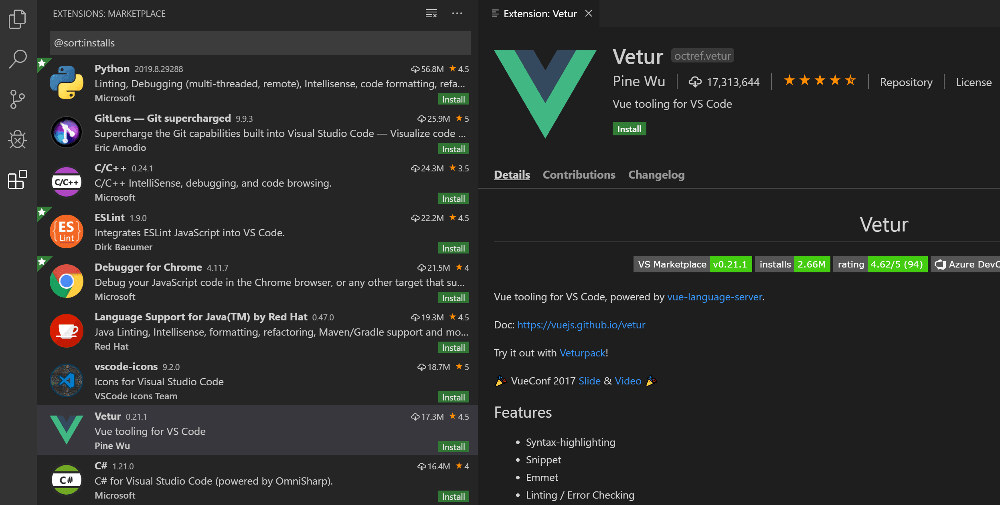
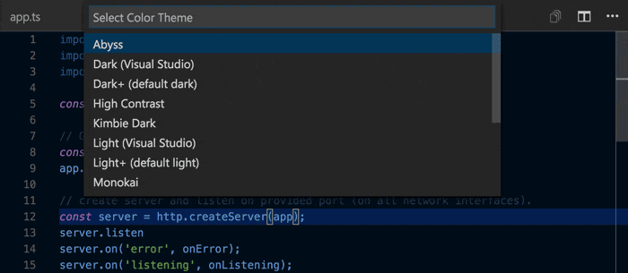
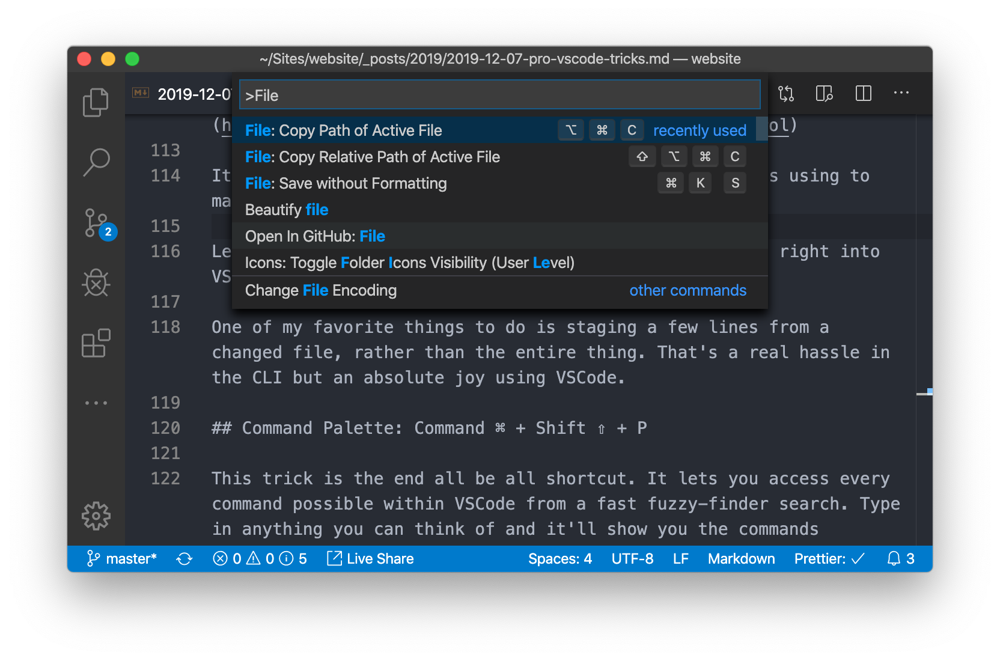

If you want print version => add '
?print-pdf' at the end of slides URL (remove '#' fragment) and then print.
Like: https://wwwcourses.github.io/...CourseIntro.html?print-pdf
Настройка на средата.
Created for
Created by

Структура на директориите
Структура на директориите
Основна директория за курса
Създайте папка FE_Course на вашият компютър и в нея създайте показаните 3 папки
FE_Course/
├── HW # папка с файлове за задачите за домашно
├── Labs # папка с файлове за упражнения в часовете
└── ProjectName # папка с файлове за курсовия проект, когато стигнем до там...
Структура на директориите за курсовия проект
ProjectName/
├── design_notes # папка с файлове касаещи дизайна на сайта
└── site_root # главната (root) папка за сайта
├── images # папка с файлове с изображения за сайта
├── js # папка с JavaScript файлове
├── pages # папка с HTML файлове за отделните страници на сайта
└── styles # папка с CSS файлове
└── index.html # HTML файл за началната страница на сайта
Структура на директориите за курсовия проект - пример
mysite.com/
├── design_notes
│ ├── about_sketch.png
│ ├── contacts_sketch.png
│ ├── home_sketch.png
│ └── mysite_description.txt
└── site_root
├── images
│ ├── img1.png
│ └── img2.png
├── js
│ └── main.js
├── pages
│ ├── about.html
│ ├── contacts.html
│ └── products.html
├── styles
│ └── main.css
└── index.html
Конвенции за имена на файловете
Файловете за вашият Web сайт ще бъдат качени на сървър. За да си спестите излишни усложнения, спазвайте следните конвенции за имена на директории/файлове.
- Използвайте само латински букви, цифри, тире (-) и подчертавка (_)
- За четимост на отделните думи, не използвайте спейс, a тире (-) или подчертавка (_) или Camel Case конвенцията.
- Имайте предвид, че Linux сървърите (за разлика от Windows) правят разлика между малки и големи букви в имената на файловете/директориите.
Инструменти за създаване на Уеб страници
Инструменти за създаване на Уеб страници
Текстови редактори
- Notepad++ (Windows)
- Sublime Text ( Linux/Unix, Windows, Mac OS X )
- non open-source
- Visual Studio Code ( Linux/Unix, Windows, Mac OS X )
- open-source
Характеристики на VSCode?
- Мулти-платформен: Linux, Windows, Mac OS X.
- Open-source: https://github.com/microsoft/vscode
- Ежемесечно обновяване.
- Изчерпателна документация: VSCode Docs.
- Многобройна общност, създаваща непрекъснато множество полезни разширения за най-новите технологии: VSCode extensions marketplace.
- Интуитивен и подходящ за начинаещи програмисти
Какво ще ползваме?
- В следващите слайдове са дадени подходящи ресурси, които ще ви улеснят в усвояването на VSCode, тъй като това е редактора, който ще ползваме по време на курса.
- Избора на някой от модерните редактор за код е преди всичко въпрос на лични предпочитания.
- Това, което е важно, е да се чувствате добре с редактора, които сте избрали и да отделите време и усилия за неговото усвояване.
Запознаване с VSCode
Запознаване с VSCode
VSCode - Инсталиране
От официалния сайт, където е последната версия: Visual Studio Code
VSCode - Интерфейс
- Документация: User Interface

VSCode - Разширения
-

- Документация:
- Using extensions in Visual Studio Code
- Extension Marketplace
{kind=link}
VSCode - Настройка на цветова тема
-

- Документация: Color Themes
{kind=link}
VSCode - The Command Palette
- Предимства:
- Дава бърз достъп до всички команди в VSCode и инсталираните пакети.
- Филтриране/търсене по произволна част от низа (fuzzy search) 
- Активиране:
- Чрез клавиатура: Ctrl+Shift+P
- Документация: Command Palette
{kind=link}
VSCode - Клавиатурни комбинации
Платформи за споделяне на код
Платформи за споделяне на код
Онлайн платформи за създаване, преглед и споделяне на код (HTML/CSS/JS)
Полезни са за споделяне на малки "парчета" код (code snippets). Всяка една предлага и LivePreview.
GitHub
- GitHub e най-популярната cloud услуга за споделяне и съвместна разработка на open-source проекти, базирани на git
- Детайлно с Git и GitHub ще се запознаем в Advanced курса, но е необходимо да си направите безплатна регистрация в github.com още сега, тъй като ще ползвате github за да качвате решенията на вашите задачи за домашна работа.
Качване на файлове в GitHub чрез VSCOde
Качване на файлове в GitHub чрез VSCOde
- Инсталирайте git: Installing Git
- Отворете VSCode и бъдете сигурни, че сте заредили папката с проекта (например - HW), като workspace.
- Създайте празен файл
.gitignore. В него може да зададете кой файлове/директории ще бъдат игнорирани от git. Няма проблем и да бъде празен, засега. - Изберете 'Source Control' от Activity Bar.
- Натиснете 'Initialize Repository' за да "кажете" на git да следи файловете/директориите в проекта (прави се еднократно за проект)
- Работете върху проекта (HW) - когато решите да запазите работата си, върнете се отново в 'Source Control', в полето за 'message' напишете с 2-3 думи върху какво сте работили (например: 'HW1-done') и натиснете бутона 'Commit'.
- Ако се появи прозорец, който ви пита: "Would you like to stage all your changes and commit them directly" - изберете 'Yes'.
- Публикувайте кода си в github, като изберете "Publish Branch" (в последващите промени ще виждате 'Sync Changes')
- VSCode ще ви предложи име за проекта в Github и варианти да бъде публикуван като 'private' или 'public' репозитори. Изберете 'public'.
- Reference: How To upload Files on GitHub (using VSCode)
Ресурси
Readings
VS Code offical docsGetting started with Visual Studio Code
Кратко въведение от официалния Youtube канал на Visual Studio Code
VSCode Keyboard Shortcuts For Productivity
Представяне на някои от основните клавиатурни комбинации, които драстично ще увеличат продуктивността ви при използването на VSCode
Visual Studio Code Tutorial for Beginners - Introduction
Доста по-пълно въведение от Academind - популярен Youtube канал посветен на Web Development
These slides are based on
customised version of
framework